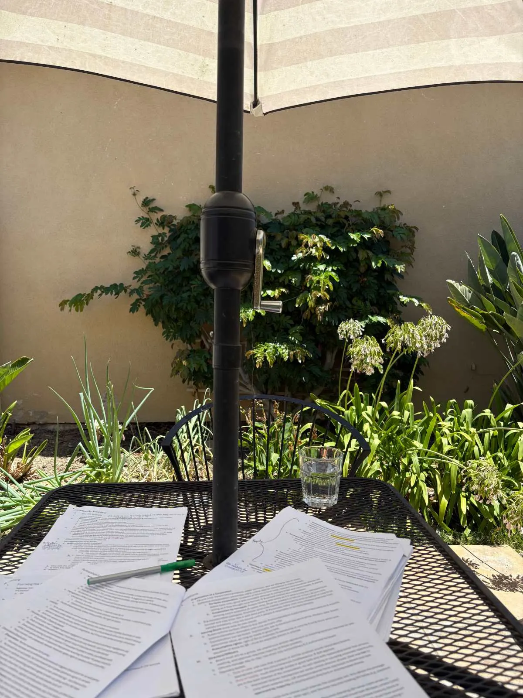
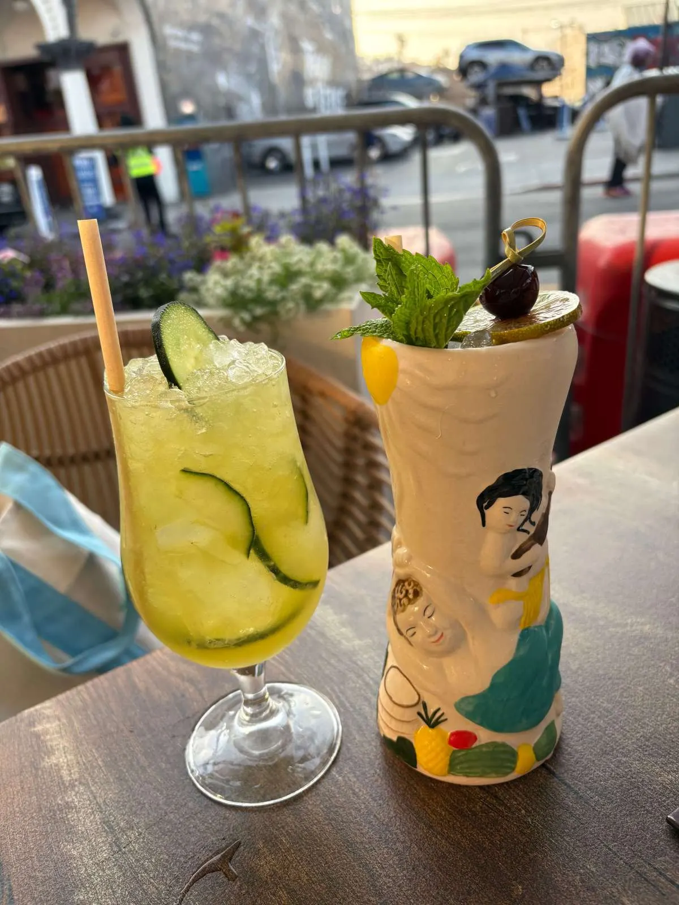

I took the California bar exam in July 2025, ten months into my first year of working full-time in big law and a year after taking the New York bar, which adopted the Universal Bar Exam (UBE) in 2016 – I talk about my experience preparing for and taking the UBE here.
It was a personal (and difficult) decision to take another bar exam at this point in my life, and I explain my reasoning more below. It is not a decision to take lightly, as it does take a considerable amount of time and energy (and $), but I am glad that I did it, and if you decide that it is best for you to take a second state’s bar exam, you too can do it with some strategic planning. I saw very few posts online that addressed my situation, so I am sharing my experience here with the hope that it will provide more insight for anyone out there who might be considering this option.
Should You Take the Second Bar Exam?
The decision to take a second bar exam is a personal one, depending on your specific goals and circumstances, only you can decide for yourself whether/when to take it.
Since my family is in California, the thought of taking the California bar exam had been in the back of my mind, but I didn’t have any specific plans to take it. Having moved to a new city and started a new (and demanding) job in big law, I expected that it would be difficult to work full-time while studying. And so, as soon as I finished the July 2024 NY bar exam, I erased it from my mind and focused on enjoying my bar trip and settling into my new job. It was only in March 2025 that I decided to take the bar exam in July. If I were to do it all over again, I would have seriously considered taking the February exam instead of waiting until July. While the start of a new job is stressful, it is also relatively less busy because you’re ramping up and probably won’t have a full workload until a month or so into your job. Also, the bar exam material is the most fresh in your head, and you can just get it out of the way.
The case for taking it now: The material is still fresh, and you remember what it’s like to be a student/be in study mode. You can get it out of the way and not have to worry about it again. You’re also likely to be the least busy your first year starting out. And since you’ve already passed one exam, there’s less at stake for this exam, which should take a bit of pressure off of studying. Also, at the time I was making my decision, there were indications in the news that California could change the entire structure of its bar exam in a few years, so I thought it best to take it now while I was most familiar with the current format, even though I had no concrete plans to move back to the Golden State anytime soon.
The case for waiting: No one has a crystal ball and a lot can change in five years, and unless you have concrete plans to move to that state, there’s a chance that you may not end up moving. So for some people, it may make sense to wait to take the bar exam until you know for sure that you are going to move. Also, if you wait 4 years, you can take the Attorneys’ Examination, which is just one day instead of two (you just take the essay portion, not the multiple choice). For me, it didn’t seem worth it to wait 4 years to be able to skip one day of the exam, especially since I felt that multiple choice was my strong suite and I would still need to spend about the same amount of time studying. But for others, the one-day exam may be a more attractive option.
CA Bar vs. UBE
If you’re still reading this, you have probably decided to take the bar exam again – either the CA Bar after the UBE or the UBE after the CA Bar. While the format is generally the same and there are many similarities between the two exams, there are also some key differences. Both exams take place over two days. The first day (essays) has a different format, while the second day (multiple choice) is the same for both exams. The CA Barwebsite has more details on the structure and format of its bar exam.
Day One: For the UBE, you have two (2) Multistate Performance Tests (MPTs) in the morning (worth 20% of your score), followed by six (6) 30-minute essays in the afternoon (worth 30% of your score). For the CA Bar, you have a total of five (5) hour-long essays and just one (1) MPT (3 essays in the morning, 2 essays + 1 MPT in the afternoon). So the essays make up a higher % of your total score for the CA Bar. In addition, the subjects tested are slightly different. Both exams test the 7 core subjects that you take your 1L year of law school: Civil Procedure, Constitutional Law, Contracts, Criminal Law and Procedure, Evidence, Real Property, and Torts. However, the subjects that are fair game for the essays are slightly different for each exam (i.e. the below could show up but will not necessarily be tested on your exam):
| Both UBE and CA Bar | UBE Only | CA Bar Only |
| – Agency & Partnerships – Corporations – Trusts – Wills – MBE subjects: (federal) Civil Procedure, Constitutional Law, Contracts, Criminal Law and Procedure, Evidence, Real Property, and Torts | – Conflict of Laws – Family Law – Secured Transactions | – Civil Procedure (CA law) – Community Property – Evidence (CA law) – Professional Responsibility (aka Ethics: this subject is pretty much tested on every exam so definitely study this one!) – Remedies |
When I was studying for the CA Bar, I was initially a bit concerned that the CA Bar essays would be more difficult since you have twice as much time on each essay. However, it was a relief to know that twice the time does not mean twice as difficult! Each essay gives you more facts to work with, so they’re designed for you to be able to identify more issues and write more. While this could be more difficult in that each essay is worth more, so you need to make sure that you write something down for each one (vs. you can probably get away with failing one or two of the essays for the UBE), I found that the CA bar essays were more predictable, i.e. it was easier to identify the specific issues being tested, whereas for a couple essays on the NY exam it was hard for me to tell which subject/issues were even being tested.
Day Two: The second day is the same for both exams: you take the Multistate Bar Exam (MBE) all day, with 100 multiple choice questions in the morning and 100 in the afternoon (worth 50% of your score). The MBE tests only the 7 core subjects that you take your first year of law school (federal law only, no CA law).
Bottom line: Taking the bar for the second time definitely comes with some advantages. If you’re taking the second exam relatively soon after the first, you’ll retain more information than you think, and now knowing how the process works, you’ll have a better idea of how to study and what to focus your time on the second time around.
Studying While Working Full Time
I’m not going to sugarcoat it – studying will often not be fun (unless studying for the bar is the type of thing that you enjoy, in which case I envy you), and you may find yourself questioning why you made the decision to put yourself through this again – but it is definitely doable, especially if you are strategic about it. Below I offer four study tips that helped me while I was studying:
1) Start early and have a schedule. I think that the most important thing you can do is to have a schedule and stay disciplined. You probably are not going to follow it completely, but it’s helpful to at least have a plan. I mostly studied on the weekends when I was less likely to be disrupted by work demands. I enrolled in the Barbri course, which began mid-March, but didn’t seriously start studying until the last month or so, when I was more motivated to study as the exam date drew closer.
I went back and forth over whether to enroll in a Barbri course (which I had done for the NY bar). I ultimately decided to do so because I felt like with my schedule, I needed something that would give me structure and the feeling that I was checking off boxes and making progress. However, it can be pricey (the alumni discount is only about $200) and I don’t think you need it if you are self-disciplined and motivated to study on your own. I didn’t watch the videos (and would not recommend watching them) – instead, I used the course mainly for the multiple choice and essay practice questions, as I found the answer explanations helpful. There are plenty of free practice questions online – the CA bar website posts the actual essay questions from previous exams going years back, with model student answers – I just personally preferred the detailed, analytical structure of the Barbri answers and explanations to review my answers.
If you know ahead of time that you are going to be taking a second bar exam, I would recommend buying a friend’s course books from them (before they return them, as Barbri has you do to get your $250 deposit back). I mostly used Barbri’s practice materials anyway and this can save you a couple thousand dollars, and it’s unlikely that the material will change much in a year or two. What I’ve heard from others (and agree with) is that the most important thing you can do for yourself (after reviewing your outlines and materials) is to practice practice practice.
2) Your time is limited and precious – be strategic about how you spend it. People have many demands on you as a full-time attorney – you have the same client requests, while also still needing to fit in exercise, eating, social/personal time, and any other family demands. So efficiency and maximizing time is key here. On the bright side, having an extra commitment certainly made me more productive with my time and picky about how I spent it. I used my outlines from my NY Bar prep and just created new outlines for the CA-specific subjects, which saved a lot of time. You will study maybe half the time that the Barbri course recommends, and that is likely more than sufficient – you know what to expect, and you know that you don’t need to memorize everything to pass the exam. You can spend less time on the MPTs (unless you specifically struggled with them) since they don’t require any memorization of the law – I did maybe 3 PTs total before the exam. Sleep was my #1 priority, but if I woke up early I would get in 30 minutes to an hour in the morning before work, and if I had time after work I would try to get some studying in then too. I also brought my notes with me and reviewed them whenever I could including on the subway, whether during my commute to work or going out for dinner on a Saturday evening.
3) Be prepared to make some sacrifices – but don’t forget self care. Naturally, with a new time-consuming commitment, something in your schedule will have to give – for me, I sacrificed my social life and would not recommend doing this – relationships are important and an essential part of your mental health and wellbeing, and mine definitely suffered during this time! Even a 30-minute FaceTime with a close friend or family member can make a world of difference. I also worked out a lot less (which I was more willing to sacrifice). It was also especially tough to be studying during the warm spring and summer months (vs. if you study in the winter, it’s cold outside and you want to stay indoors anyway). And after so much screen time during the week, the last thing I wanted to do on the weekends was spend most of the day on my computer. To compensate for this, I tried to vary my study environment so I wasn’t always holed up in my apartment. I spent a lot of time in the library and various coffee shops, and used this as an opportunity to explore my neighborhood (and treat myself to good coffee).
4) If possible, take time off before the exam. I was able to take 3 days of PTO + had the weekend before the exam, which was the perfect amount of time, especially since I had to fly back to California to take the exam, and you don’t want to be stressed out the day before the exam with a work emergency. My team was very supportive and even encouraged me to take PTO leading up to the exam, and I’m grateful that I had such a supportive team. And regarding exam day, you know the drill: eat a good tried-and-true breakfast, pack a lunch (or know your lunch options at the test center), check the website beforehand on what to bring and not bring to the exam. And hopefully the exam experience will be much less stressful compared to the first time – you have done it before, and you can do it again.

For me, the hardest part about studying was feeling like I was doing it alone (unlike the first time around when all your classmates are studying along with you), and missing having real weekends. I also kept comparing how prepared I felt at various points compared to the previous year, and how I was scoring worse, barely passing on the practice exams and below passing on many of the essays per Barbri’s scoring rubric. But, as I kept reminding myself, you are aiming to pass, not score an A, and you do not need to know everything to pass the exam. And in the end, it’ll all be worth it. Months after the exam, I continue to cherish my weekends and have made it a point to get out of my apartment as much as possible and make the most of my free time.

Good luck! Let me know in the comments below if you also took two different bar exams and how your experience was, or if you are considering it and find any of this helpful!